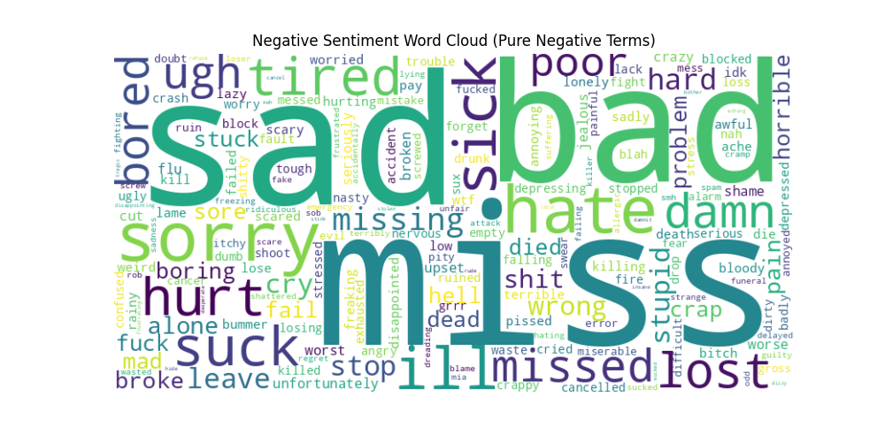

Exploratory Analysis
Visualizing the most discriminative terms for each sentiment class.

Positive Sentiment

Negative Sentiment
Performance Metrics
Logistic Regression achieved the highest accuracy, offering the best balance of performance and efficiency.
| Model | Accuracy | ROC-AUC |
|---|---|---|
| Logistic Regression | 78.35% | 0.865 |
| LSTM (Epoch 1) | 78.04% | - |
| Naive Bayes | 77.12% | 0.851 |
| VADER | 64.81% | - |

Logistic Regression Confusion Matrix
Visual Comparison
A side-by-side comparison of model performance metrics.
- Logistic Regression leads in both Accuracy and F1-Score.
- LSTM shows strong potential despite limited training epochs.
- VADER lags significantly behind supervised methods.

Feature Importance
Analysing model coefficients reveals the semantic drivers of sentiment.
-
Positive Indicators:
"thanks", "love", "good", "welcome" -
Negative Indicators:
"sad", "miss", "sorry", "sick", "bad"

Error Analysis Comparison
Comparing confusion matrices to identify systematic errors across model types.
Logistic Regression

Naive Bayes

LSTM (Deep Learning)